पीएचडी विद्यार्थी | आणविक आनुवंशिकी | ओहायो स्टेट युनिभर्सिटी Ph.D. Student | Molecular Genetics | The Ohio State University
जीवन एक यात्रा हो.....सिक्दै र बढ्दै Learning and Growing.....Life is a Journey

मेरो नाम अनुप पराजुली हो। म हाल ओहायो स्टेट विश्वविद्यालयमा आणविक आनुवंशिकीमा पीएचडी गर्दै छु। मेरो शैक्षिक रुचि आनुवंशिकी, आणविक जीवविज्ञान, जैवसूचना विज्ञान र संरचनात्मक जीवविज्ञानको संगमस्थलमा छ। मलाई कोडिङ, अनुसन्धान र तथ्याङ्कीय विश्लेषणलाई एकसाथ जोडेर आनुवंशिक विविधताले जैविक प्रक्रिया र रोगको विकासमा कसरी प्रभाव पार्छ भन्ने बुझ्न रुचि छ।
My name is Anup Parajuli. I come from Nepal. I am a Ph.D. student in Molecular Genetics at The Ohio State University. My academic interests lie at the intersection of genetics, molecular biology, bioinformatics, and structural biology. I enjoy research that brings together coding, experimentation, and quantitative analysis to explore how genetic variation influences molecular function and disease.
खाली समयमा मलाई समुद्र किनारमा हिँड्न, खाना पकाउन, गिटार बजाउन, घुम्न तथा संग्रहालय र कला प्रदर्शनीहरूको अवलोकन गर्न मन पर्छ। कविता लेख्न, संगीत सुन्न र मृत्तिकाकलामार्फत सिर्जना गर्न पनि म रुचाउँछु।
In my free time, I find joy in simple and creative things: walking by the beach, cooking, playing guitar, traveling, and exploring museums and art exhibits. I also enjoy working with clay, writing poems, listening to music, and solving puzzles.
यहाँ मेरो संक्षिप्त जीवनवृत्त (CV) प्रस्तुत छ। यदि तपाईंलाई थप जानकारी वा संवादमा रुचि छ भने parajuli.30 at osu dot edu मा इमेलमार्फत सम्पर्क गर्न सक्नुहुन्छ।
Here is my compact CV if that interests you. Feel free to email me at parajuli.30 at osu dot edu to chat more.
आगामी अवसरहरू र सिकाइहरूले भरिएको यस यात्राप्रति म उत्साहित र आभारी छु। Grateful and excited for this remarkable journey ahead.
बार्सिलोनाको संस्कृतिमा डुब्दै, स्पेनका सबैभन्दा पुराना र प्रतिष्ठित विश्वविद्यालयहरूमध्ये एकमा अध्ययन गरेँ।। Studied at one of Spain's oldest and most prestigious universities while immersing in the culture of Barcelona.
Parajuli A, Phan H, Walsh S. 2026. In silico protein structure analysis of nine deleterious NIT1 missense mutations identified in human cancers. microPublication Biology. Submitted
Aslam, M. H., Parajuli, A., Chiriatev, I., and Levenson, R. H., Sequence Determinants of Dynamic and Reversible Reflectin Assembly. In preparation
थप जान्न चाहनुहुन्छ? parajuli.30 at osu dot edu मा इमेल गर्नुहोस्। Interested in learning more? Email me at parajuli.30 at osu dot edu.


"के तपाईं कहिल्यै यो साधारण संसारका सीमाभन्दा बाहिर हराउनुभएको छ?" "Have you ever wandered beyond the edges of this ordinary world?"
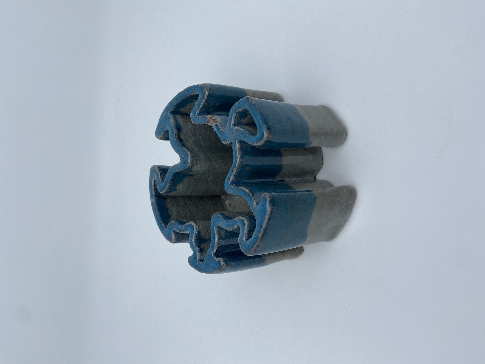
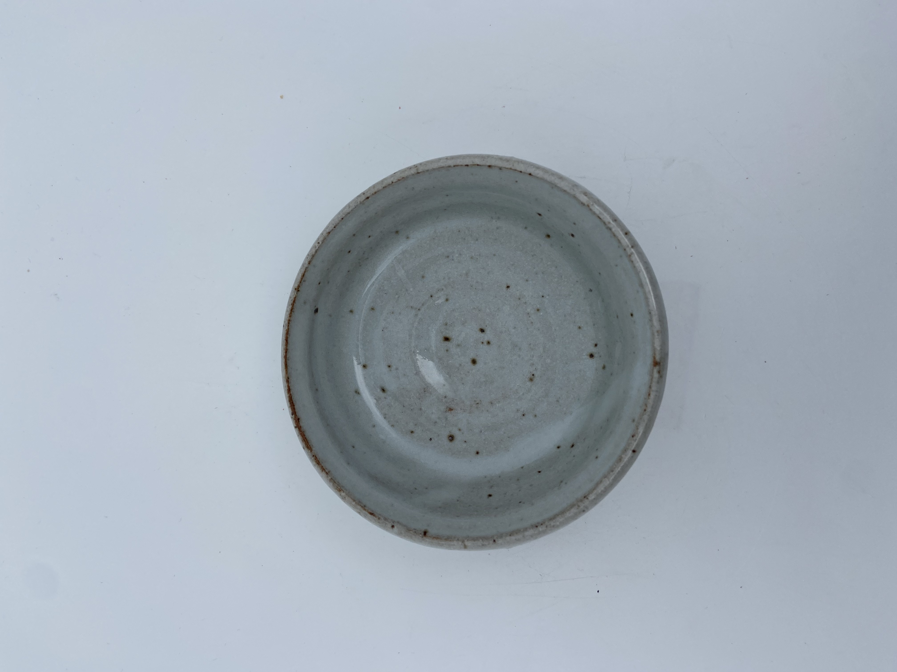
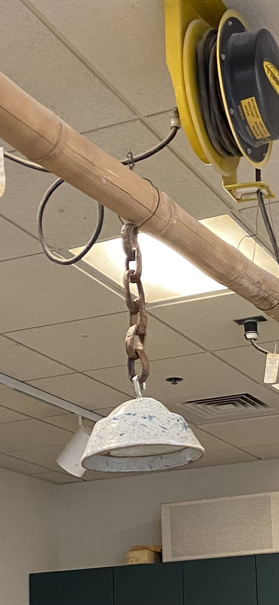

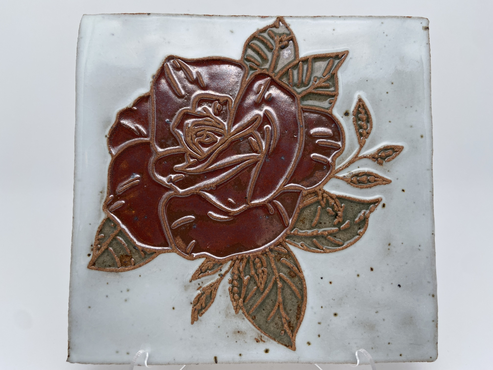
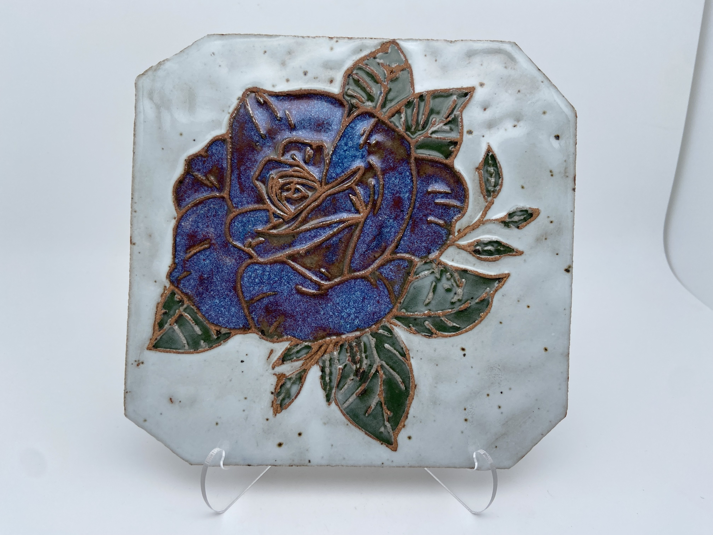
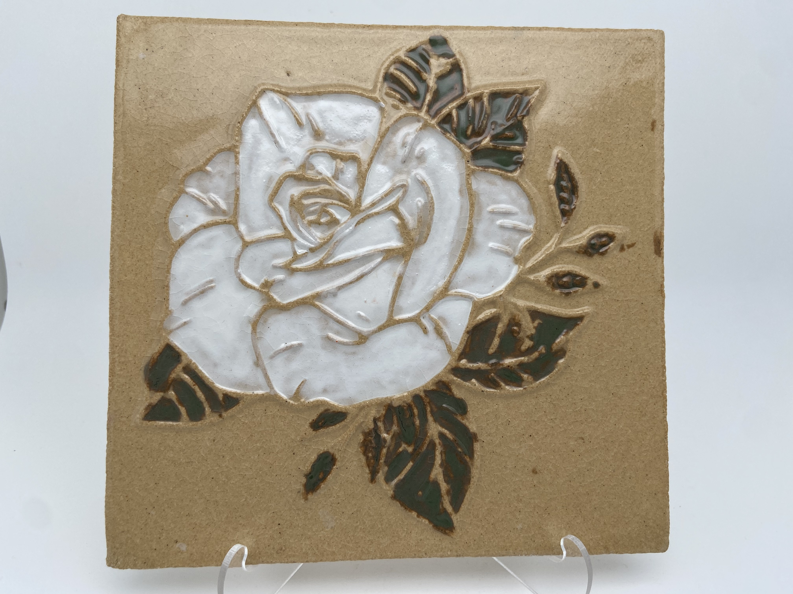
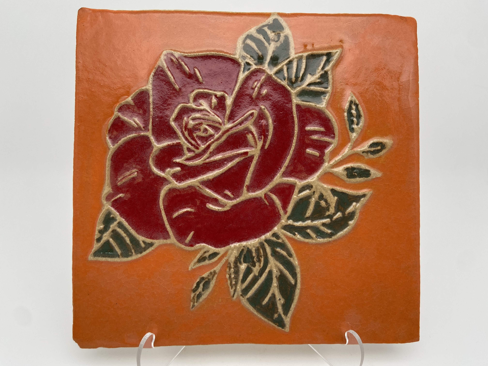
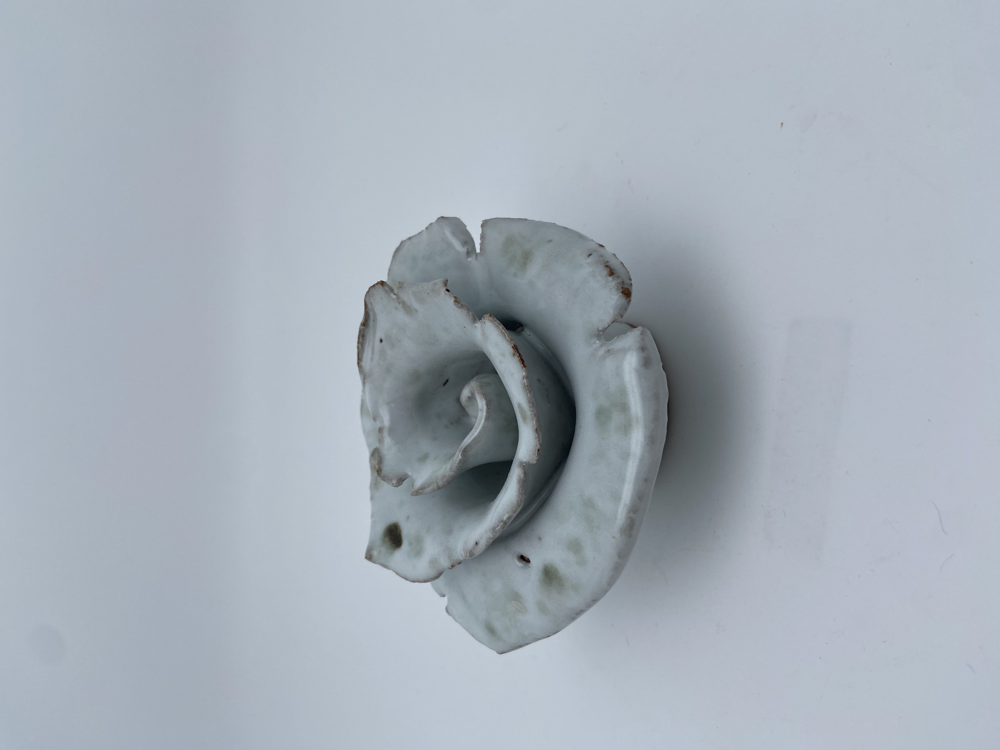
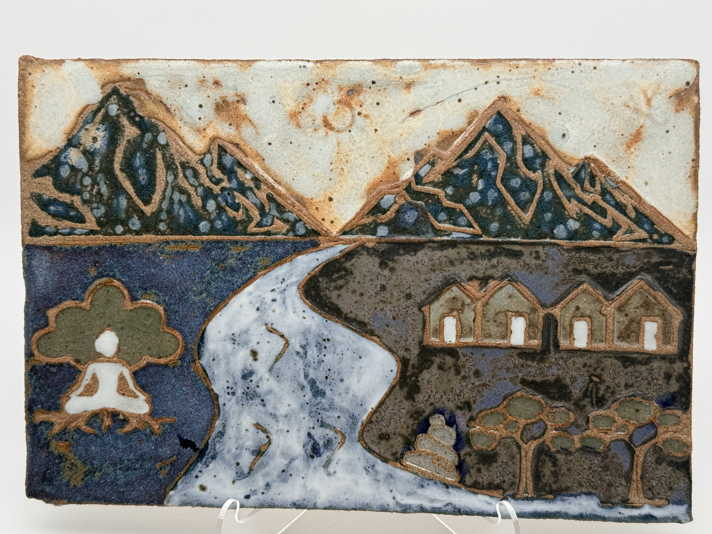
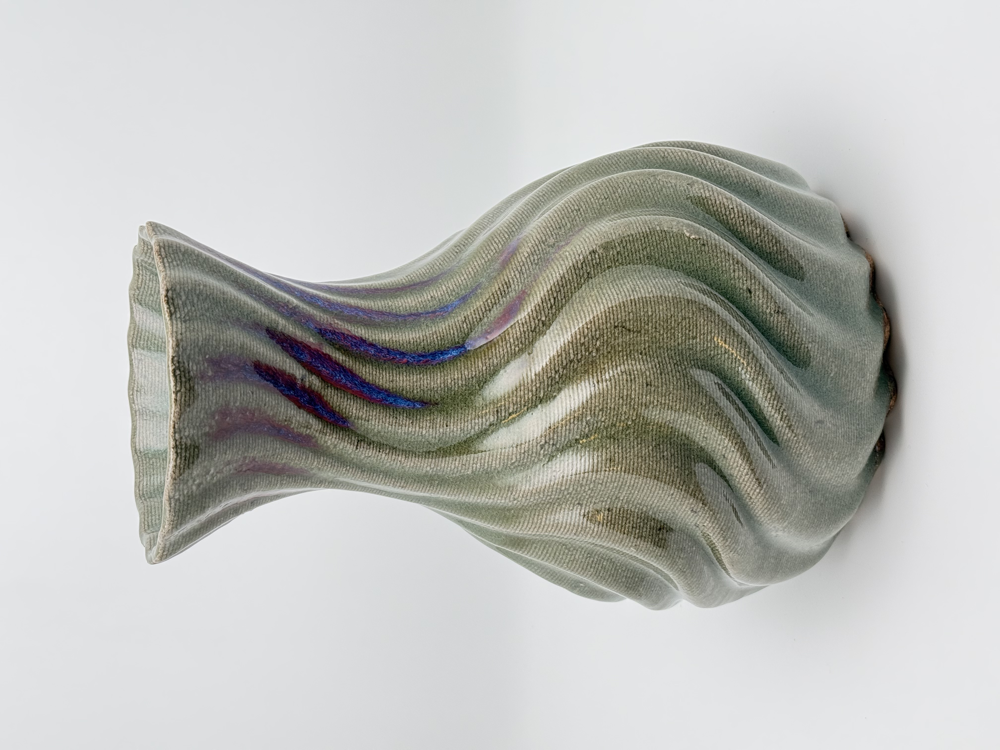
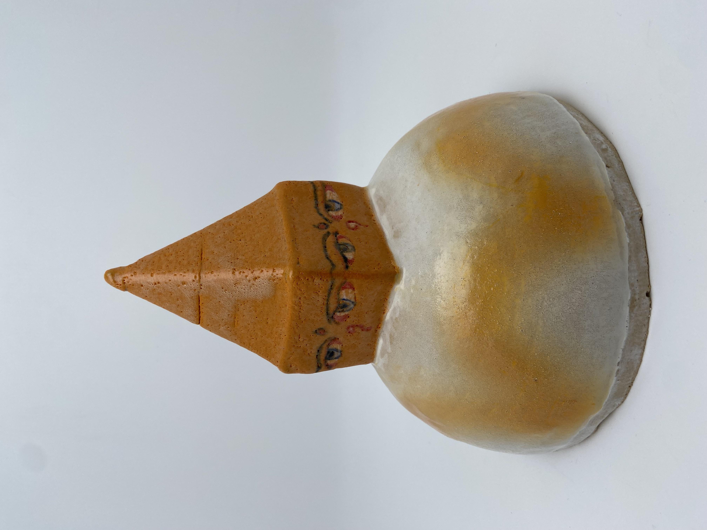
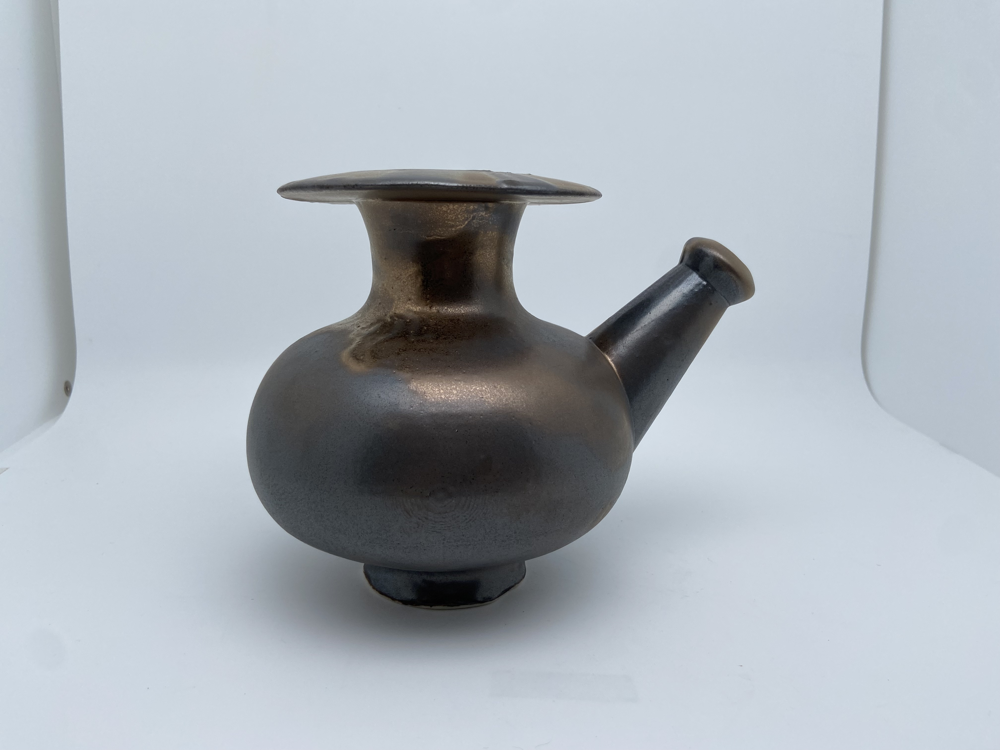
मेरो यात्रालाई आकार दिएका क्षणहरू र स्थानहरूको दृश्यात्मक कथन। A visual narrative of moments and places that have shaped my path.

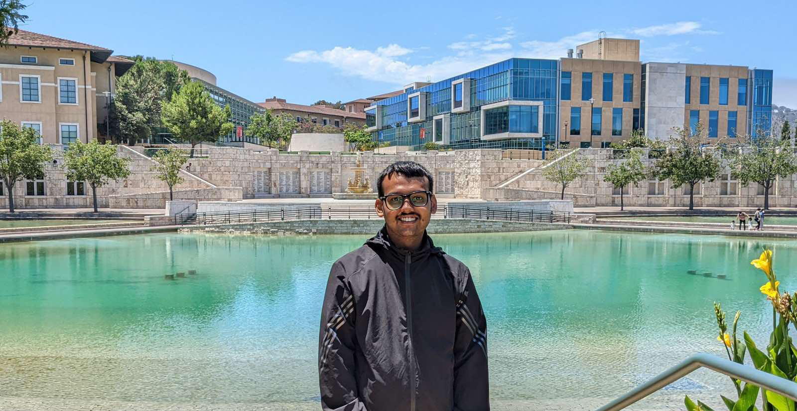


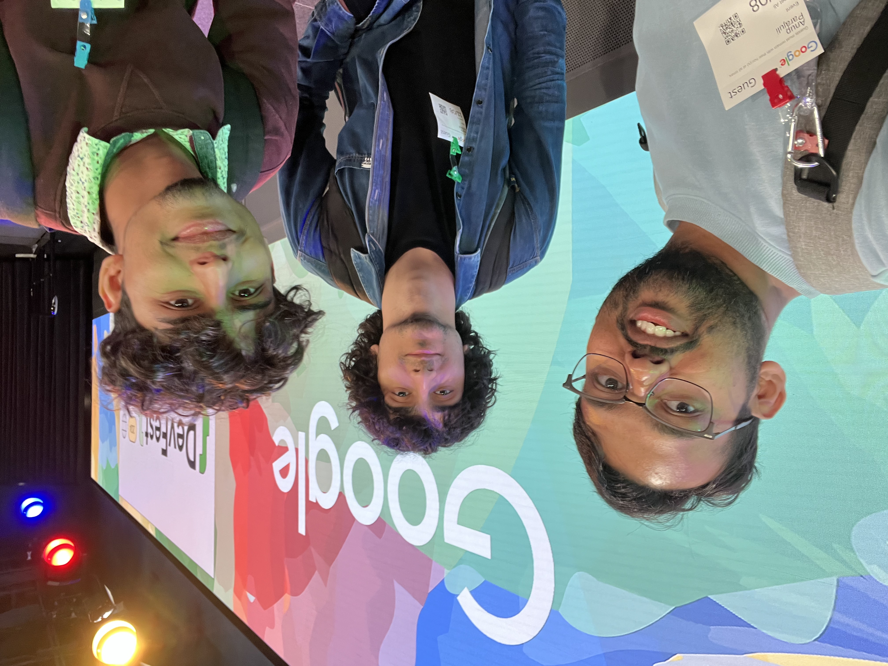